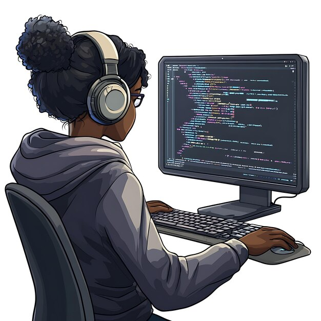

Am a passionate web developer and blockchain enthusiast.
Welcome to my portfolio website. I am a passionate web developer with a love for creating beautiful and functional websites. I have experience in HTML, CSS, JavaScript, and various web development frameworks. I am always eager to learn new technologies and improve my skills.
On this website, you will find information about my projects, skills, and contact details. Feel free to explore and get in touch with me if you have any questions or would like to collaborate on a project.
I have experience in blockchain development. I have worked on projects that involve smart contract development and decentralized applications (DApps). I am passionate about the potential of blockchain technology and its impact on various industries.
In addition to web development, I also have a passion for product design. I enjoy creating user-friendly interfaces and designing visually appealing products. I believe that good design is essential for creating a positive user experience.
As a frontend developer, I specialize in creating responsive and interactive websites. I have experience working with various frontend frameworks and libraries, and I am always looking for new ways to improve the user experience.
In addition to my technical skills, I also have experience in digital marketing. I understand the importance of promoting websites and products effectively to reach a wider audience. I am familiar with various digital marketing strategies and tools.